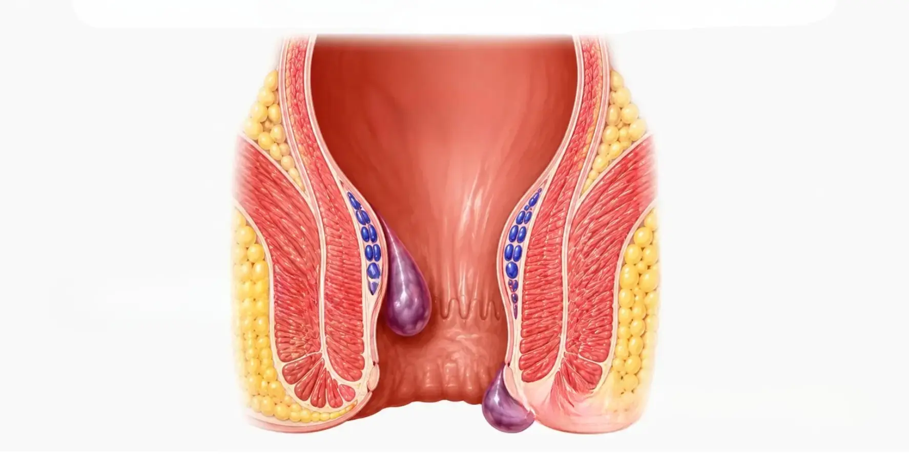

Piles are swollen blood vessels in and around the anus. They are common, and they can cause bleeding, a lump or discomfort when you pass stool.
Dr. Pradip Tupere, a proctologist and general surgeon at Navoday Clinic in Kharadi, Pune, examines you first and then explains your options. Surgery is not needed for every patient.
Confidential consultations.
At a glance
| Topic | In brief |
|---|---|
| What they are | Swollen blood vessels in the lining of the anal canal (internal piles) or under the skin around the anus (external piles) |
| Common signs | Bright red blood after passing stool, a lump near the anus, itching, discomfort and mucus |
| See a doctor if | You notice bleeding, a lump that does not settle, or symptoms that keep coming back |
| Who treats piles | A proctologist or a general surgeon who treats anorectal conditions |
| Where | Navoday Clinic, Kharadi, Pune |
Symptoms of piles
Symptoms depend on where the piles are and how large they have grown.
Internal piles (inside the anal canal)
- Bright red blood on the stool, on the toilet paper or in the toilet bowl
- A soft lump that comes out during a motion and may go back by itself or need to be pushed back
- Mucus, itching, or a feeling that the bowel has not emptied fully
- Usually little pain
External piles (under the skin around the anus)
- Itching, swelling or a tender lump near the anus
- Sudden, sharp pain if a blood clot forms inside the lump
See a doctor soon if
- Bleeding is heavy or repeated, or the stool looks dark or tarry
- You feel weak, dizzy or breathless along with the bleeding
- A new lump is very painful and hard
- Your bowel habit has changed, or you are losing weight without trying
- You are over 40 and the bleeding is new
Bleeding should always be examined, because other conditions can look similar.
Why piles develop
Piles develop when the veins around the anal canal are under repeated pressure. Common causes and risk factors include:
- Constipation and straining during a motion
- Sitting on the toilet for a long time, including with a phone
- A low-fibre diet and too little water
- Pregnancy and childbirth
- Being overweight, or sitting for most of the day
- Heavy lifting and long-lasting diarrhoea
- Increasing age and a family history of piles
Knowing the cause helps stop piles coming back, so Dr. Tupere asks about your diet, bowel habits and daily routine.
How piles are diagnosed
Diagnosis starts with a conversation and a physical examination. Piles are then graded from 1 to 4, and the grade helps decide your treatment.
01
Your history
Dr. Tupere asks about your symptoms, bowel habits, diet, medicines and family history.
02
Examination
He examines the area around the anus and, if needed, looks inside the anal canal with a short viewing tube called a proctoscope.
03
Further tests when needed
If your symptoms or age point to another cause of bleeding, he may advise a colonoscopy.
Piles treatment options, chosen after examination
Treatment depends on the grade of your piles, your symptoms and your health. Surgery is not the answer for every patient, and Dr. Tupere advises the right option only after examining you.
Without a procedure
Early piles are often managed with more fibre and water, healthier toilet habits and medicines that ease symptoms. A procedure is considered when symptoms continue or the piles are more advanced.
General guide by grade
| Grade | What happens | Approaches usually considered |
|---|---|---|
| 1 | Piles stay inside and may bleed | Diet and lifestyle changes, medicines, and sometimes injection sclerotherapy or infrared coagulation |
| 2 | Piles come out during a motion and go back by themselves | The above, or a procedure such as HAL-RAR, THD or laser haemorrhoidoplasty |
| 3 | Piles come out and need to be pushed back | A procedure such as HAL-RAR, THD, laser haemorrhoidoplasty or the stapler procedure |
| 4 | Piles stay outside and cannot be pushed back | Usually a surgical procedure, such as the stapler procedure |
This is a general guide only. the grade guide may vary.
Procedures Dr. Tupere performs
- Injection sclerotherapy: A medicine is injected into the pile tissue to shrink it.
- Infrared coagulation: A short pulse of infrared light is applied to the base of the pile to shrink it.
- HAL-RAR (Haemorrhoidal Artery Ligation with Recto-Anal Repair): The arteries that feed the piles are located with a small Doppler probe and tied off, and loose tissue is lifted and stitched back.
- THD (Transanal Haemorrhoidal Dearterialisation): The feeding arteries are found with a Doppler-guided device and tied off, so the piles shrink.
- Laser haemorrhoidoplasty: Laser energy is delivered into the pile tissue to shrink it from inside.
- Stapler procedure (MIPH): A circular stapler removes a ring of extra tissue above the piles and lifts the remaining pile tissue back into place.
- Cryosurgery: The pile tissue is frozen to destroy it.
Each procedure has its own suitability, risks and recovery, which Dr. Tupere explains before you decide.
Consult Dr. Pradip Tupere for piles
Dr. Pradip Tupere is a proctologist and general surgeon with an MBBS and an MS in General Surgery. His training for piles includes stapler surgery for haemorrhoids in Italy, laser surgery for haemorrhoids in Austria, and injection sclerotherapy in Mumbai.
In 2013 he received the Dadasaheb Phalke Community Achievement Award for the social work of piles treatment camps using injection therapy.
What to expect at your visit
- Book: Call, message on WhatsApp or use the form. We confirm your appointment slot.
- Bring: Any earlier reports, a list of the medicines you take and your questions.
- Consultation and examination: Dr. Tupere listens to your symptoms and examines you in a private setting.
- Your plan: He explains your diagnosis and your options. Not every visit leads to a procedure.
If a procedure is advised: You are guided through preparation, the procedure and recovery. Recovery time depends on the procedure. [Dr. Tupere to confirm typical recovery times and follow-up visits.]
Book a piles consultation in Kharadi, Pune
Dr. Tupere will examine you, explain your options and answer your questions. Call [+91 7720868686], message on WhatsApp [+91 9922427393] or use the form.
Address: Navoday Clinic, Mundwa -Kharadi Rd, near Nyati Plaza, Thite Nagar, Kharadi, Pune, Maharashtra 411014
Piles: frequently asked questions
Piles are common and usually not dangerous, but bleeding should always be examined because other conditions can look similar. Heavy or repeated bleeding, dark stool, weakness or a change in bowel habit needs a doctor's examination soon.
No. Early-stage piles are often managed with diet, lifestyle changes and medicines. A procedure is considered when symptoms continue or the piles are more advanced, and Dr. Tupere advises the right option after examining you.
Both cause pain and bleeding near the anus, but they are different problems. A fissure is a small tear that usually hurts sharply during and after a motion. Piles are swollen veins and often bleed with little pain. Only an examination can confirm which one you have.
Mild piles often settle with more fibre and water, healthier toilet habits and time. They can return if the cause continues, and piles that keep bleeding or coming out should be examined.
Eat more fibre, drink enough water, avoid straining and avoid sitting on the toilet for long. A warm sitz bath may ease discomfort. Do not treat bleeding yourself for weeks without an examination.
You can see a proctologist or a general surgeon who treats anorectal conditions. Dr. Pradip Tupere is both, and he consults at Navoday Clinic in Kharadi, Pune.
Yes. Pressure during pregnancy, constipation and childbirth can cause piles. Many settle after delivery, but see a doctor if there is bleeding, pain or a lump.
The cost depends on the grade of your piles, the procedure chosen, the type of anaesthesia and the facility used. A fixed price cannot be given before an examination, so Dr. Tupere explains the plan and the expected cost at your consultation. [Clinic to confirm what can be stated]
Yes. Dr. Pradip Tupere, a proctologist and general surgeon at Navoday Clinic in Kharadi, Pune, provides consultations for piles and other anorectal conditions. He examines your symptoms and recommends suitable treatment based on the severity of your condition.
If you are looking for a piles doctor near you in Kharadi, Pune, you can consult Dr. Pradip Tupere at Navoday Clinic. As a proctologist and general surgeon, he can assess symptoms such as anal pain, bleeding during bowel movements and swelling, and guide you on appropriate treatment options.